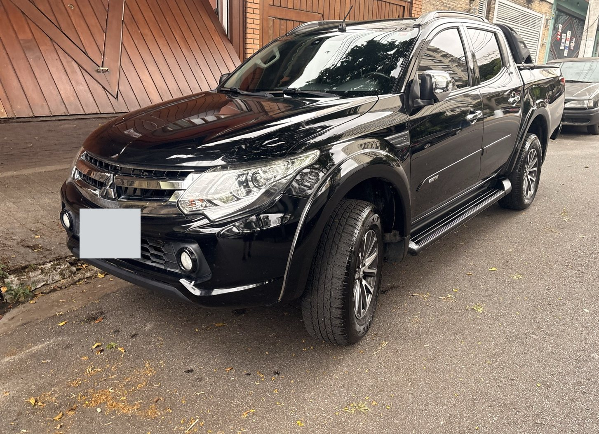
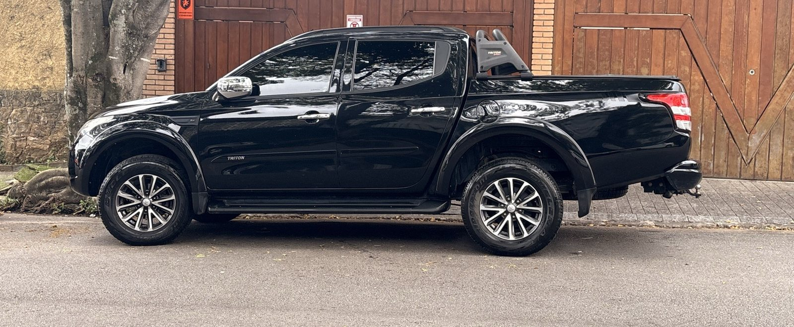
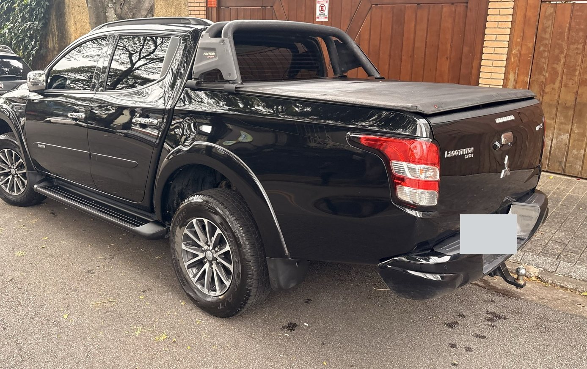
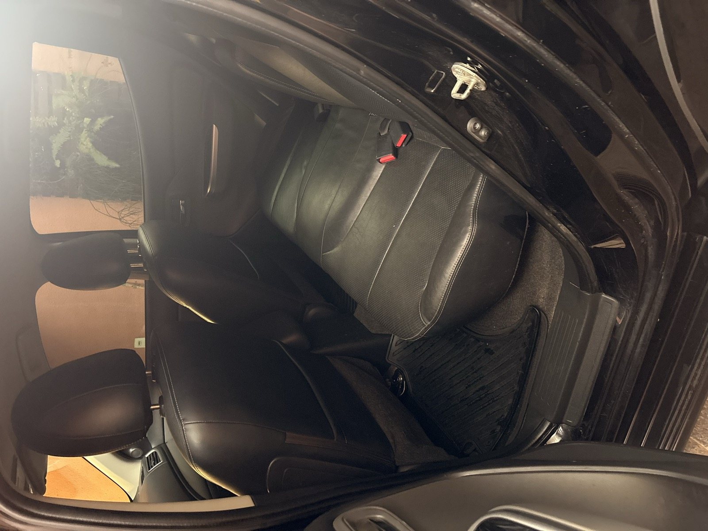
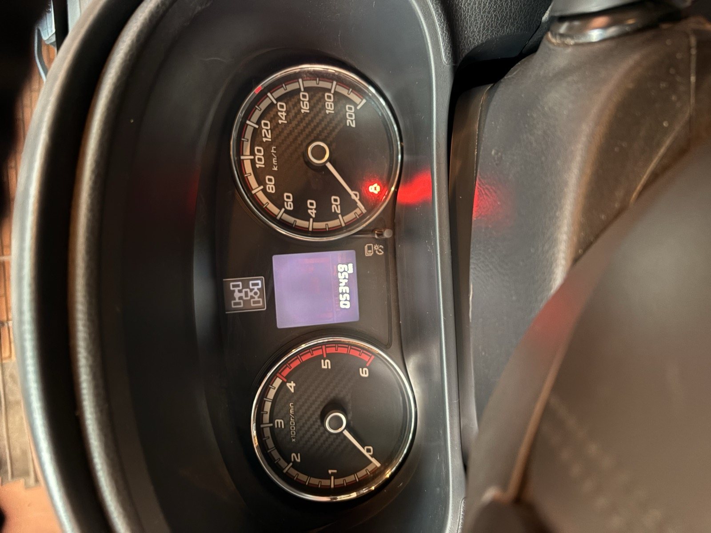
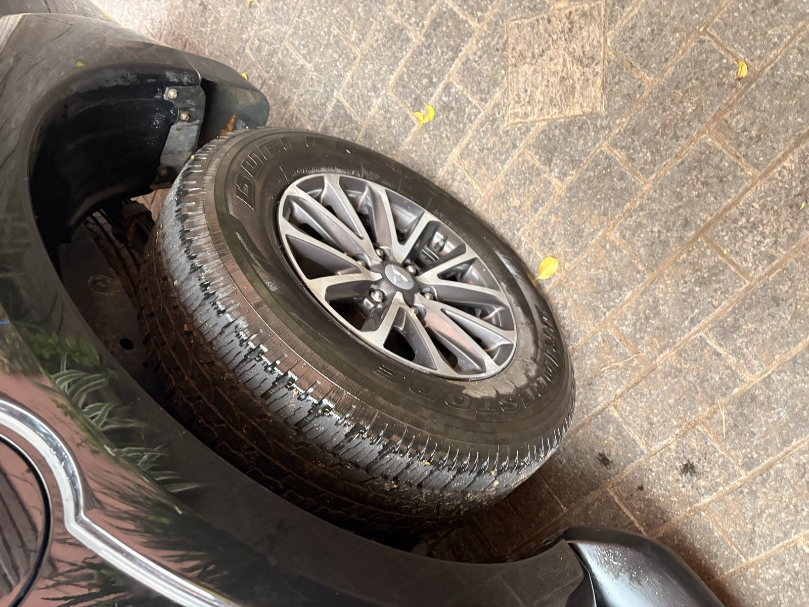
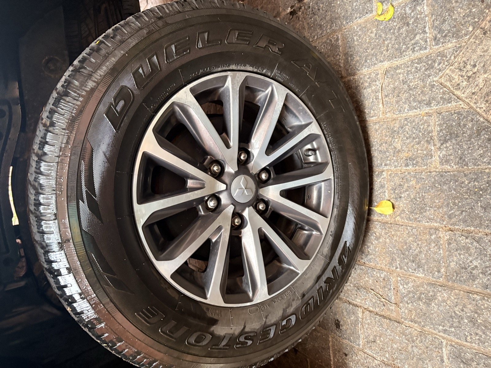
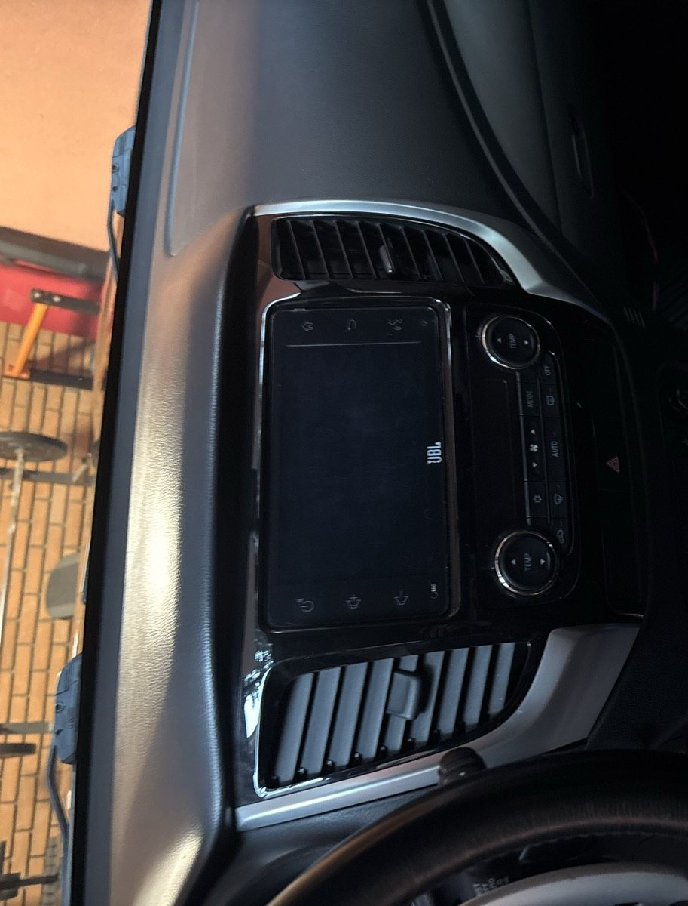
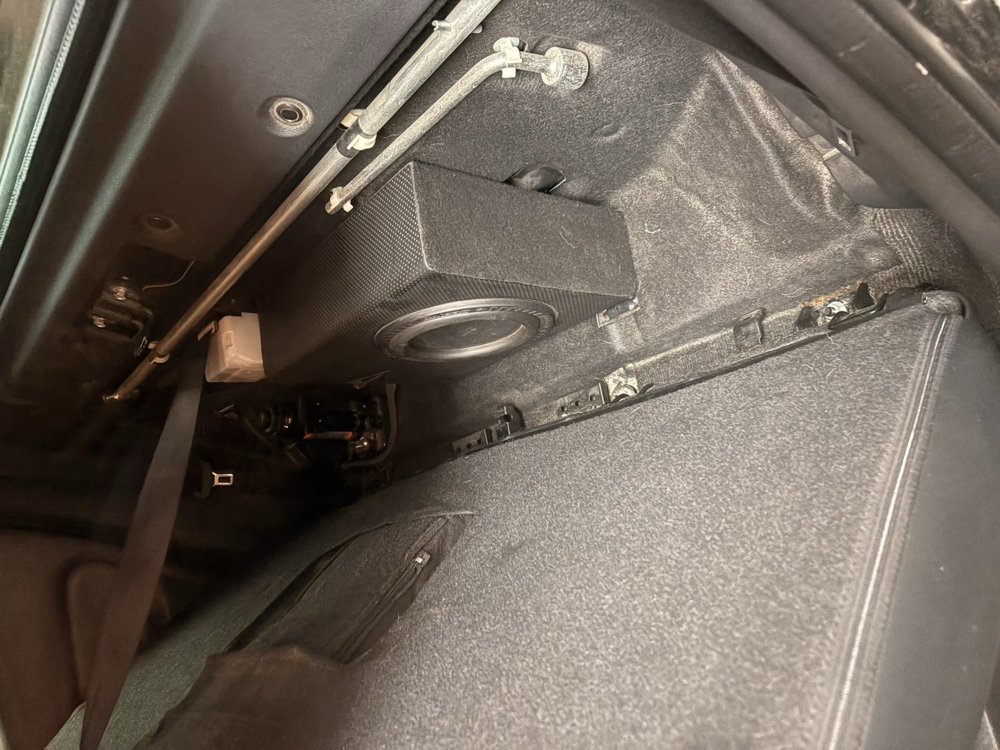
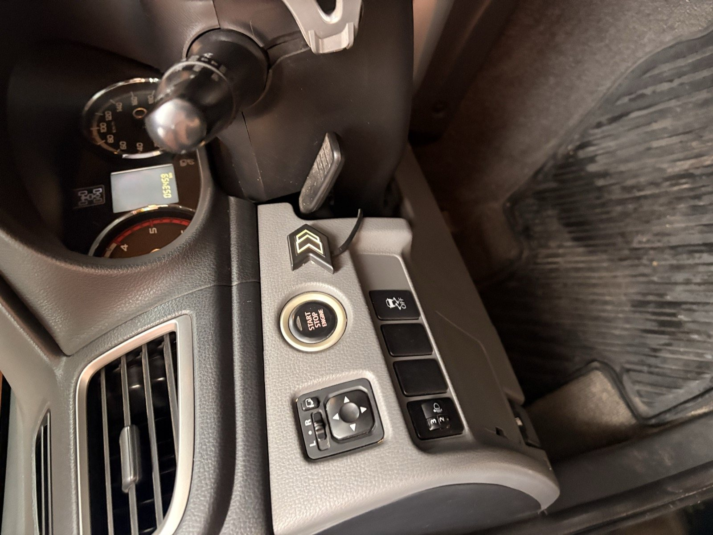

53,5 mil km
Quilometragem aproximada de uma HPE-S 2019/2020.
Venda particular · Mitsubishi
Uma caminhonete bem cuidada, com baixa quilometragem, revisões em dia e pneus all-terrain praticamente novos.

O que chama atenção
Baixa quilometragem e um conjunto de cuidados e equipamentos informados pelo proprietário.
Quilometragem aproximada de uma HPE-S 2019/2020.
Todas as revisões realizadas, conforme informado pelo proprietário.
Pneus AT praticamente novos, mostrados em detalhe nas fotos.
Sistema JBL de fábrica, acompanhado de subwoofer ativo.
Controlador eletrônico da resposta do acelerador, que permite ajustar a sensibilidade do pedal. Não altera a potência do motor.
Veja de perto
Toque em uma foto para abrir a imagem completa.

Perfil lateral
Traseira em três quartos
Bancos traseiros
Hodômetro
Pneus AT
Rodas e pneus
Sistema JBL
Subwoofer ativo
ShiftPowerAs placas foram ocultadas nas fotos públicas. Quilometragem fotografada: 53.459 km.
Ficha do veículo
Dados técnicos do veículo e informações confirmadas pelo proprietário.
Combinar uma visitaInformações do proprietário
Revisões em dia e veículo bem cuidado.
Sem passagem por leilão e sem histórico de sinistro, conforme informado pelo proprietário.
Venda particular. Não aceito troca.
Perguntas frequentes
Cerca de 53.500 km. Na foto do painel, o hodômetro registra 53.459 km.
Sim. Todas as revisões foram realizadas, conforme informado pelo proprietário. Os detalhes podem ser conversados no contato.
Não. A venda é particular e não aceito troca.
Segundo o proprietário, não tem passagem por leilão nem histórico de sinistro.
Venda particular
Se quiser mais detalhes ou combinar uma visita, fale diretamente comigo pelo WhatsApp.